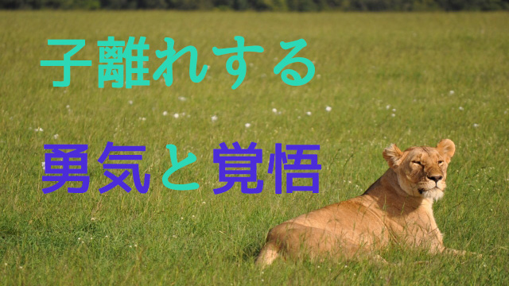

前回の記事でも触れたが、我が子が巣立っていくのは親としては嬉しい反面一抹の寂しさを感じるのも事実だ。
私は教育者の端くれとしてアチコチで「子離れの大切さ」を説いてきたが、それは私自身「子離れの難しさ」を実感しているからだ。
せっかく育ててきた我が子が親許を去り家から出ていくのはやっぱり寂しい。何か親という役割を剥奪されるような侘しさを感じるのだ。子の自立は親のアイデンティティを危うくする。
考えてみれば今の時代、親離れ子離れは昔より難しくなっている気がする。少子化、高学歴化、核家族化さらには学校行事への親の協力や参加要請の奨励など、何だかんだで親子で過ごす時代が昔より圧倒的に多い。
つまり親子の密着が強まり、それは親の介入度合いも強くなっているということを意味する。当然子どもの自立も遅れがちとなる。
昔―たとえば戦前―なら子どもは14～15歳になると長男（跡継ぎ）以外は働きに出るのが普通だったし戦後も―昭和30年代～40年代くらいまでは―中学を出ると多くの若者は家を出て自活するのが一般だった。高校まで行ければ御の字だっただろう。
当時は子だくさんの家庭も多く、一人ひとりの子どもの面倒を手厚く見ることもできなかったし、何より社会全体が貧しく子どもを「上の学校」に行かせる余裕ある家庭は少なかった。
今はその頃に比べたら子ども一人にかけるお金、世話、エネルギーは何倍にもなるだろう。そして一人ひとりの子に親の目は行き届きすぎるくらい行き届くようになった。
だから、昔のほうが良かったと言いたいわけではない。当時は親の目が行き届かないことで子どもたちが事件、事故に巻き込まれたり不良グループに入ることも多かったし、自立が早い反面これといった知識やスキルをもたず社会に出ることで、職を転々と変えあげく居場所を見つけられずに終わる者も多かった。それに比べたら今は幼い頃から親の愛情を一身に受け、伸びやかに素直に育つ子が多いと実感する。だから良い悪いの問題ではない。
ただ、現代の親子関係に問題があるとしたらむしろ親の側が「子離れ」できにくい現状があるということ。子どもをいつまでも手許におき放したくない親が増えていることにある。
親がよほど注意しないと「子離れ」のきっかけを失いかねない。そんな時代になったと、我が身をふり返りまた周囲の家庭を見て思う。
親の準備と覚悟
だから今親が心がけるべきは現代が親子密着の度合いが強い時代であると親自身が十分自覚すること。その上で子どもの自立欲求をいかに促しスムースに子離れを実現していくか、その意識的努力が大切になってくる。
できれば子どもが幼いときにある程度方針を決めておくことも大事だと思う。たとえば小学生までは徹底的に愛情を注ぐ。思春期からは徐々に「手放し」を始め、高校生くらいからは大人として完全に信頼し任せるという具合。こんな大ざっぱな方針でも構わない。
要は親が子離れと自立へ向けて「意識的」であるかどうかだ。
いちばん困るのは、幼児期のままの子育てを思春期になっても続ける親の「無意識的態度」である。時折子どもが高校生になっても「ウチの子はアレができない、コレができない」と訴える親を見かけるが、その心配する姿勢そのものが子どもの自立を阻んでいることに気づかない。
親は口では「困った」と言いながら腹の中ではむしろいつまでも子どものままであって欲しい。つまり子どもを手放したくないという心理が働いていることに気づいて欲しい。無意識のまま幼児期の子育てを継承しているということだ。
考えてみればこの「子を手放したくない」という親心は人間特有のものだ。人間以外の動物は一定の時期が来れば非情なまでに子どもとの絆を断ち切ってしまう。よくテレビなどで野生動物の生態を映しているが、あの中でたとえば母ライオンが離れたがらない子ライオンを時には噛みついて追い払うシーンがあるが、その光景には思わず涙が出そうになる。
つまり動物には「子離れのスイッチ」が本能としてセットされている。厳しい自然界を生き抜く知恵なのだろう。
しかし人間には子離れのスイッチはない。だからこそ我々親は意識的に子離れへ向けての準備と覚悟が必要なのだ。この覚悟がなければいつまでもダラダラと子どもに執着してしまうだろう。たとえ寂しさや空しさ親の役割を喪失するような空虚を感じようと、子の自立を祈って手放す覚悟をもたなければならない。
結局のところ親は子どもを信じるしかない。
いかに我が子が頼りなく見えようと、何度も母ライオンにつき放され最後はあきらめて一人トボトボ荒野に去って行く子どもライオンのように、いつかは一人前の大人に成長するだろうと信じて…。